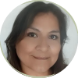
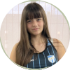
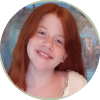
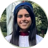
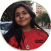
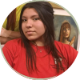
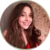

Voluntariado
¡Animate a ser parte de esta comunidad!
- 
Mí nombre es María Inés. Soy voluntaria de la Fundación Vida Sostenida, una hermosa iniciativa que nos permite poner un granito de arena para cuidar nuestro planeta. Creo que los pequeños cambios que podamos hacer en nuestras vidas, pueden generar un gran impacto para mejorar nuestro medioambiente y dejar un mundo mejor para las próximas generaciones.
Contacto: m.ines.toranzo@gmail.com -
Soy Guadalupe. Estoy participando de este proyecto por qué me interesa el tema del medioambiente, en lo personal soy una persona a la cual le gusta mucho reciclar y hacer nuevas cosas a las qué la gente llama basura. Es muy importante qué todos sepamos el problema que estamos viviendo en nuestro mundo, y hagamos algo al respecto desde donde cada uno pueda.
Contacto: alderetemartha58@gmail.com 
Me llamo Priscila Abril. Me gusto mucho participar en el reciclaje de hojas y desde ahí me pareció una muy buena idea poder ayudar de alguna manera al medio ambiente y creo que es algo muy bueno que en si ayudan a las dos partes tanto a nosotros como personas así también como al medio ambiente.
Contacto: priscilamartinez.tuc@gmail.com- 
Me llamo Jade Anahi. Participo porque quiero aprender a cuidar el medio ambiente desde chica, y me parece important saber qué cosas dañan al ambiente.
Contacto: jadetoledo512@gmail.com - 
Soy Emilia, me interesa ser parte de la fundación porque es muy importante concientizar sobre ciertas cosas que hacemos que dañan al medio ambiente y evitarlas.
Contacto: mariaemiliaguzmancanelada1@gmail.com -
Mi nombre es Susana. Participo en la Fundación porque estoy convencida de que todos debemos trabajar unidos en favor de sostener nuestro ambiente y nuestra cultura.
Contacto: susanauequin@hotmail.com - 
Mi nombre es Martina. Vivir de manera sostenible es la clave para proteger nuestro hogar, inspirar cambios positivos y dejar un legado de respeto hacia la Tierra.
Contacto: martinaabregu446@gmail.com 
Holi, soy Guadalupe Ibañez. Estoy participando de este proyecto por qué me interesa el tema del medioambiente, en lo personal soy una persona a la cual le gusta mucho reciclar y hacer nuevas cosas con lo qué la gente, llama basura. Es muy importante qué todos sepamos el problema que estamos viviendo en nuestro mundo, y hagamos algo al respecto desde donde cada uno pueda.
Contacto: guadaibanez307@gmail.com- 
Mi nombre es Sol, soy voluntaria FVS porque me parece importante que todos nos conviertamos en agentes de cambio para mejorar nuestra casa común, nuestro planeta.
Contacto: sol7avila@gmail.com - 
Mi nombre es Nahir y participó de esta organización porque me interesa aprender a cuidar el medio ambiente e incentivar a más personas a hacerlo.
Contacto: morena.nahir.caceres@gmail.com - 
Hola soy Julieta, me interesa formar parte de la fundación ya que hay que concientizar sobre el daño que se realiza al medio ambiente y la manera de evitarlo.
Contacto: guzmancaneladajulietamaria212@gmail.com